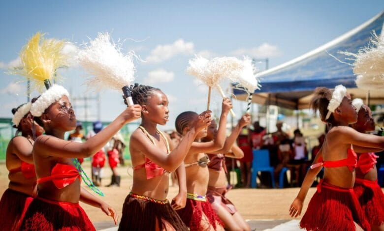
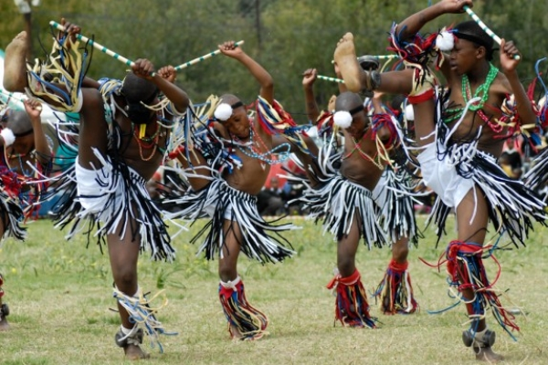
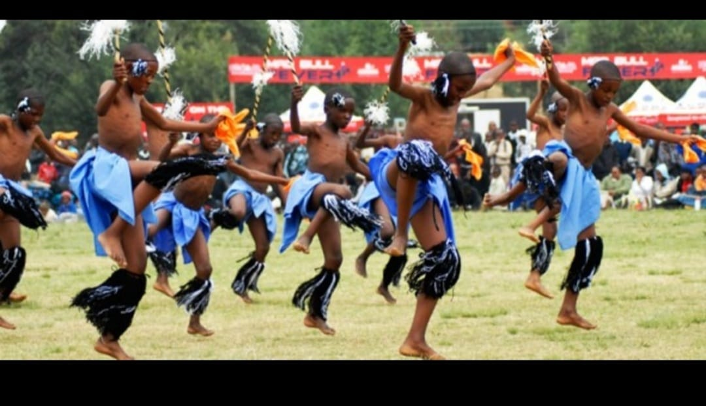

Welcome
The Morija Arts & Cultural Festival is one of the most important cultural events in Lesotho. It celebrates the traditions, music, art and heritage of the Basotho people. Each year the festival attracts local and international tourists who want to experience authentic cultural performances and exhibitions.
Visitors can enjoy traditional dance performances, live music concerts, art exhibitions, craft markets and delicious Basotho cuisine. The event creates an opportunity for artists and performers to showcase their talents while promoting cultural tourism.
Gallery




Join Us
Experience culture like never before